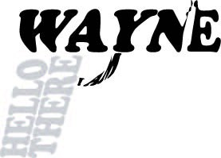

Gun Typography
Description:
In my design, I have made use of the font Cooper Black for my gun design. I made use of the rest of the words for the triggers and handle, whereas my name is for the top of the gun, as well as the sight of the gun.
I chose this font as the ends of the stroke of the font resembles a gun, whereas the letters are easy to read and understand. I did not want to make the font too straight or striking as I want my gun to look approachable, but also retaining the image and meaning of one as well.
The tip of the letter “N” & “E” are extended to show the ‘sights’ of a gun, where it gives the gun a little bit more extra details to it.
Font Used:
Cooper Black, which is an ultra-bold serif typeface intended for display use that was designed by Oswald Bruce Cooper and released by the Barnhart Brothers & Spindler type foundry in 1922
It has a soft and ‘muddy’ appearance, with a relatively low contrast between thick and thin strokes. Its strokes are also rounded, which does not make it too striking and difficult to read.
I chose this font as it is intended to fit the needs of advertisers, which is easier to see as it is based on simple everyday handwriting.